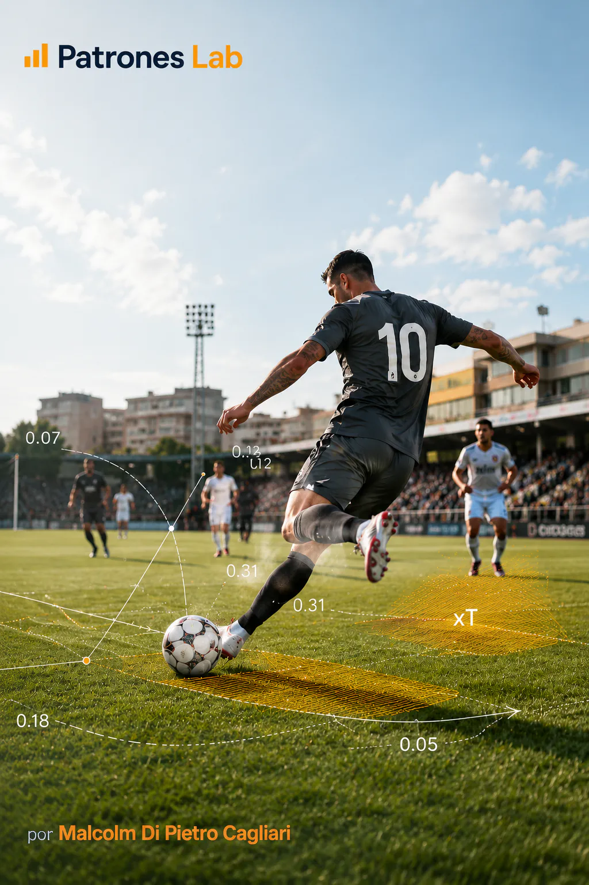

MACHINE LEARNING · PROJECT 06

Project 07 · Football analytics
Football Probabilities · Expected Threat (xT)
Analysis of attacking threat in the Russia 2018 and Qatar 2022 World Cups using StatsBomb data. The project estimates the goal probability associated with each pitch zone over sequences of five actions and measures how passes and carries increase or reduce that value. This makes it possible to compare players’ contributions to creating goalscoring situations.
CONTEXT AND OBJECTIVE
The threat of a move changes depending on which pitch zone the ball reaches. A line-breaking pass or a carry toward the penalty area can put a team in a better attacking position. The project measures this change to identify which actions increase threat during the buildup of a move.
The analysis uses StatsBomb events from the 64 Russia 2018 matches and the 64 Qatar 2022 matches. Each record indicates the action type, location, player, team and possession. This information allows threat to be estimated by zone and players, national teams and different moments of a match to be compared.
The indicator assigns a value to each pitch zone and measures how threat changes when a pass or carry moves the ball between zones. These values identify the highest-contributing actions, add up each player’s contributions and track teams’ attacking evolution throughout a match.
MODEL AND ACTION VALUATION
EVENT PREPARATION AND PITCH DIVISION
The calculation uses events from both World Cups, obtained with StatsBombPy and organized by match and possession. It considers passes, carries, dribbles and shots by the team in possession. The analysis focuses on open play and treats penalties and shootouts separately.
The pitch is divided into a grid of 96 zones, with 12 columns and 8 rows. Each zone covers 10 by 10 units in the data’s coordinate system. This makes it possible to calculate threat for each zone and compare it with other areas of the pitch.
GOAL PROBABILITY WITHIN FIVE ACTIONS
The indicator records whether a possession results in a goal within a sequence of up to five attacking actions, including the first. For each zone, it calculates the proportion of actions meeting this condition. The result is called PE5-Gol and reflects the observed goal frequency in these sequences.
ESTIMATED THREAT BY ZONE
PE5(z)=\frac{G_5(z)}{N(z)}
G5(z) counts actions in zone z followed by a goal within the five actions considered. N(z) is the total number of actions recorded in that zone. Their ratio shows the proportion observed across both World Cups.
PE5-Gol is the variant of expected threat (xT) applied in this project. Its distinguishing feature is that each zone’s value is calculated from goals observed within five-action sequences. Traditional xT uses a different formulation that considers the probabilities of shooting and moving the ball between zones.
CONTRIBUTIONS OF PASSES AND CARRIES
Once threat has been calculated for all 96 zones, completed passes and carries are valued according to their starting and ending locations. For each action, the starting zone’s value is subtracted from the destination zone’s value.
CHANGE IN THREAT PER ACTION
\Delta PE5(a)=PE5(z_{\mathrm{destino}})-PE5(z_{\mathrm{origen}})
The change is positive when the ball reaches a higher-threat zone and negative when it ends in a lower-threat zone. If both zones have the same value, the change is zero.
This measures changes in threat as a move progresses, even when it ends without a shot. The calculation includes 204,694 passes and carries from both World Cups. Results can be analyzed by action, player, team and match.
CUMULATIVE CONTRIBUTION BY PLAYER
To calculate each player’s contribution, the threat changes from their passes and carries are added together. The analysis also separates actions that increase threat from those that reduce it, showing how each player contributes to the team’s attacking progression.
A PLAYER’S NET CONTRIBUTION
PE5_{\mathrm{total}}(j)=\sum_{a\in A(j)}\Delta PE5(a)
A(j) represents the set of analyzed passes and carries by player j. Their sum shows the player’s net contribution to the indicator during the period studied, using the same criteria for all players.
DELIVERY AND LEARNING
The project presents a threat map for the 96 pitch zones, player comparisons and the actions that changed that value the most. Charts show which passes and carries contributed the most threat and how the cumulative total evolved during matches.
The Argentina-France final on 18 December 2022 illustrates how the indicator works during a match. The analysis compares both teams’ contributions, the evolution of cumulative threat alongside goal times and changes over five-minute intervals. Passes and carries are plotted on the pitch with mplsoccer, while threat over time is visualized with Plotly.
In the final, passes and carries produced a net contribution of 1.670 for Argentina and 1.042 for France according to PE5-Gol. These values compare how much threat changed as each team advanced the ball during the match.
The same method can be applied to other players, teams and matches. If new events with the same structure are added, zone values can be updated and each action’s contribution recalculated to compare other matches using consistent criteria.